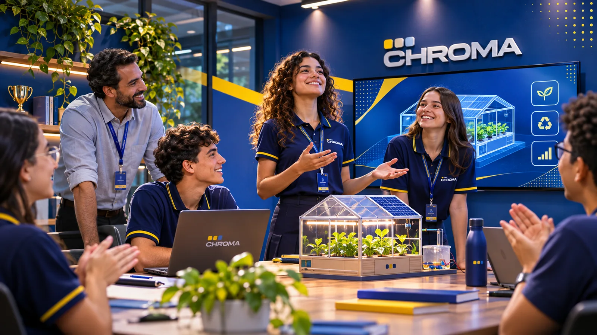

Nexus Corp
Simulação de ambientes, funções e responsabilidades do mundo do trabalho.
Há cerca de uma década, a Chroma aproxima educação, tecnologia e desenvolvimento profissional de jovens e famílias. Acreditamos que cada trajetória merece orientação, prática e oportunidades para crescer.
A Chroma reúne formação em tecnologia, idiomas e preparação para o mundo profissional. Nossa proposta conecta orientação pedagógica, estudo individual e momentos de aplicação para que o aluno entenda, experimente e desenvolva autonomia.
O estudante não precisa apenas assistir: ele encontra desafios, projetos, acompanhamento e espaço para construir suas próprias respostas.
Conheça nossa trajetória
Por meio de ações com escolas públicas, o projeto valoriza o desempenho acadêmico e busca ampliar oportunidades de formação. A avaliação de conhecimentos gerais é apresentada em uma escala de 0 a 10, com bolsas conforme o resultado e as regras vigentes da iniciativa.
As condições, elegibilidade e eventuais despesas são definidas pelo regulamento da ação; não são apresentadas aqui como promessa individual de concessão.
Entenda o projetoUma combinação de artes oficiais e cenas ilustrativas da proposta educacional. Os registros reais das unidades e dos alunos serão incorporados conforme autorização.

Aprender na prática IMAGEM CONCEITUAL / IA

Aulas inaugurais ARTE OFICIAL

Participação e frequência ARTE OFICIAL
Da simulação de uma empresa à participação em iniciativas com escolas públicas, nossa proposta vai além de apresentações: queremos que conhecimento, organização, comunicação e criatividade tenham lugar na prática.
Descubra nossas iniciativasSimulação de ambientes, funções e responsabilidades do mundo do trabalho.
Reconhecimento de estudantes e incentivo ao acesso à formação.
Atividades e iniciativas educacionais registradas com escolas públicas.
Atualizações selecionadas da comunicação institucional, com as peças originais preservadas.
Ações de incentivo à frequência e ao compromisso com a aprendizagem.
Informação e reflexão sobre uma data relevante para a sociedade.

Encontre nossas unidades, fale com a equipe e descubra mais sobre a experiência educacional.
Falar com a Chroma ↗